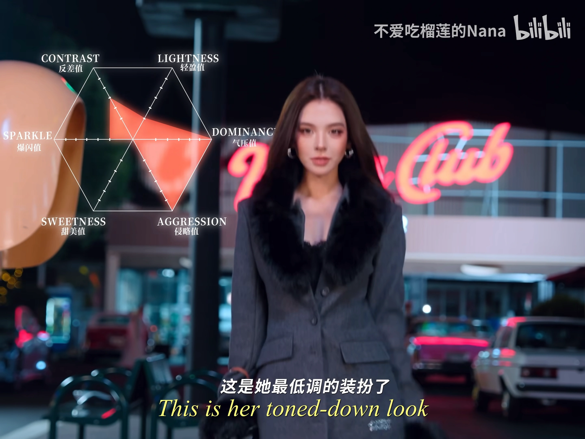

Mob Wife
复古强势风 ↗
深色剪裁，让一件夸张配饰成为重心。
视频标签：Mob wife风 · 4K截图THE STYLE EDIT / VOL. 01
Six categories. 38 considered pieces.
Discover their shape, their story and the details that last.

THE ANNUAL EDITS / 2022—2026
Four popular picks and two limited or special editions per category, per year. Photographs, design notes and dated USD references.
REAL PIECES. CONSIDERED DETAILS.
A closer look at beautiful things. Discover the shapes, materials and details behind each piece.
Five distinct approaches to the everyday handbag, from sculpted quilting and compact leather to expressive travel-label canvas. Compare the exact photographed variants, their proportions and their U.S. retail references.
THE STYLE EDITThe small Lady Dior uses a compact, upright shape to give soft lambskin an architectural presence.
 THE STYLE EDIT
THE STYLE EDITThis small Jackie translates the family’s curved outline into a slim canvas bag with an easy, close-to-the-body profile.
 THE STYLE EDIT
THE STYLE EDITThe small Galleria brings the proportions of a structured tote into a compact leather format.
 THE STYLE EDIT
THE STYLE EDITThe Baguette’s horizontal shape is built around the pleasure of carrying a bag close under the arm.
 THE STYLE EDIT
THE STYLE EDITThe Hôtel Moynat Hobo turns the House’s travel heritage into an easy everyday silhouette.
From quiet gold lines to Gothic silver pendants, compare the material, proportion and exact format of each pictured example. Brand retail references and resale asking prices are individually labelled.
 THE STYLE EDIT
THE STYLE EDITA circle can be as expressive as a stone.
 THE STYLE EDIT
THE STYLE EDITThe Smile pendant treats a small gesture as the whole composition.
 THE STYLE EDIT
THE STYLE EDITB.zero1 rewards a view from the side.
 THE STYLE EDIT
THE STYLE EDITCoco Crush translates the visual softness of quilting into a small, sculptural pendant.
 THE STYLE EDIT
THE STYLE EDITThe Baby Fat cross makes a small amount of silver feel remarkably sculptural.
 THE STYLE EDIT
THE STYLE EDITThe Dagger pendant builds its character around a long central line.
 THE STYLE EDIT
THE STYLE EDITA dog tag gives the Vine Dagger motif a broad silver surface to work against.
Interlocking circles, quilted gold and sculptural silver meet the hand and wrist. Compare these selected rings and bracelets through exact sizes, materials, condition notes and clearly identified price sources.
 THE STYLE EDIT
THE STYLE EDITTrinity makes color and movement inseparable.
 THE STYLE EDIT
THE STYLE EDITA chain bracelet becomes especially engaging when its individual links have a clear identity.
 THE STYLE EDIT
THE STYLE EDITSerpenti Viper gives a familiar animal motif a disciplined, geometric rhythm.
 THE STYLE EDIT
THE STYLE EDITThe mini Coco Crush ring offers a close reading of the collection’s surface.
 THE STYLE EDIT
THE STYLE EDITThe Cemetery Cross ring turns a repeating motif into a broad silver surface.
 THE STYLE EDIT
THE STYLE EDITCH Forever gives a simple silver band a distinctly graphic identity.
 THE STYLE EDIT
THE STYLE EDITThe Paper Chain bracelet makes its impression through repetition.
Five perspectives on time: precious metal, clear dials, distinctive cases and the character of a strap.
 THE STYLE EDIT
THE STYLE EDITThe small Tank Must gives a tailored wardrobe a quiet point of focus.
 THE STYLE EDIT
THE STYLE EDITThe medium Santos makes a strong case for a watch as part of the outfit.
 THE STYLE EDIT
THE STYLE EDITCape Cod softens a rectangular watch with curved steel outlines and gently drawn numerals.
 THE STYLE EDIT
THE STYLE EDITHeure H turns an initial into a wearable frame.
 THE STYLE EDIT
THE STYLE EDITTributo returns to Hublot’s original conversation between precious metal and rubber.
From illustrated silk squares to slender printed ribbons, these scarves show how scale changes the way a pattern is worn. Explore five photographed designs, with materials, dimensions and styling ideas for each exact variant.
 THE STYLE EDIT
THE STYLE EDITPlease Hold The Line turns the silk square into a dense field of playful drawing.
 THE STYLE EDIT
THE STYLE EDITThe navy Dior Oblique Mitzah is a narrow silk ribbon designed to bring pattern into a small area.
 THE STYLE EDIT
THE STYLE EDITThis Flora carré layers bright flowers over a GG ground and frames the composition with a broad pink border.
 THE STYLE EDIT
THE STYLE EDITPrada’s triangle becomes an all-over geometric rhythm on this compact silk twill square.
 THE STYLE EDIT
THE STYLE EDITHôtel Moynat turns a silk square into a miniature archive of journeys.
Nine considered fragrances: designer signatures and five fragrance houses, with exact concentrations, sizes and dated U.S. references.
 THE STYLE EDIT
THE STYLE EDITJ’adore suits a fragrance wardrobe built around flowers rather than a single signature note.
 THE STYLE EDIT
THE STYLE EDITGucci Bloom offers a useful starting point for someone drawn to white flowers.
 THE STYLE EDIT
THE STYLE EDITParadoxe translates Prada’s triangular emblem into a bottle that rests on its side, with pink liquid and a firm black cap setting up an appealing contrast.
 THE STYLE EDIT
THE STYLE EDITTerre d’Hermès brings a drier direction to a fragrance collection.
 THE STYLE EDIT
THE STYLE EDITTam Dao gives a woody fragrance wardrobe a particularly clear point of reference.
 THE STYLE EDIT
THE STYLE EDITSANTAL 33 is a useful way to explore the space between woods, spice and soft floral notes.
 THE STYLE EDIT
THE STYLE EDITBal d’Afrique gives a fragrance wardrobe a lively floral and woody direction.
 THE STYLE EDIT
THE STYLE EDITBaccarat Rouge 540 connects perfume with the visual language of crystal.
 THE STYLE EDIT
THE STYLE EDITWood Sage & Sea Salt brings a coastal idea into a restrained rectangular bottle.
USD prices for the pictured examples. Brand retail references and resale asking prices are labelled separately. Sources reviewed 19 October 2026–27 October 2026; check each cited source for current price, fees, condition and availability.
THE EDITOR’S LETTER
THE HOUSES & THEIR STORIES
每一个名字背后，都有一间值得走近的工坊。
NOTES ON BEAUTIFUL THINGS
A SMALL DICTIONARY OF ICONS
先记住一个细节，再打开一段故事。